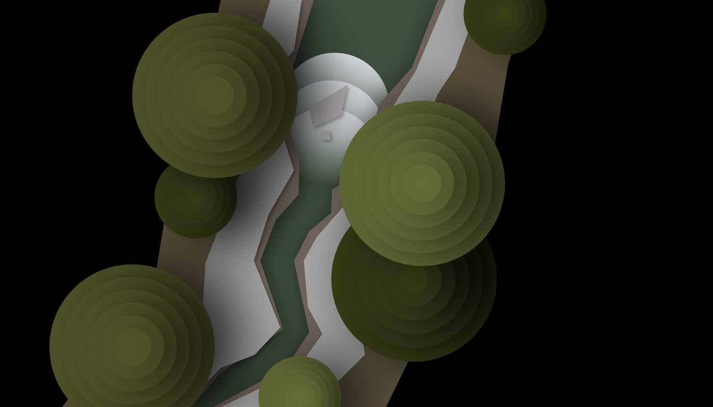

The art of the Kayak-O-Rama! is inspired by vintage travel posters, hence the paper-like appearance in-game, and adventurous, eerily optimistic tone overall that I was going for. The terrain in every level consists of a stretch of water and its immediate ground, objects, and vegitation—all that a kayaker would see anyway. Everything's on a black background, which I think makes for a cool contrast especially on OLED displays.
* Tap images to view the original file
This is a banner concept I came up with. It's only half finished, but I think it captures the vibe I'm going for so far: adventurous and intense, yet sort-of glammorous and prestegious.This is the jungle terrain, the concept art that I've based the game on so far. It's also the cleanest looking terrain in my opinion.This is the canyon terrain, inspired by the Grand Canyon.This is the archipelogo terrain. It's wide and there's no flowing water, so it's a lot different from the other concepts. It would probably need something else to make it interesting. Sharks?

This is the pine forest terrain. The stream is narrow and rocky, treacherous in it's own right. Those are supposed to be pine trees; hopefully that'll be more obvious when they have parallax in-game.